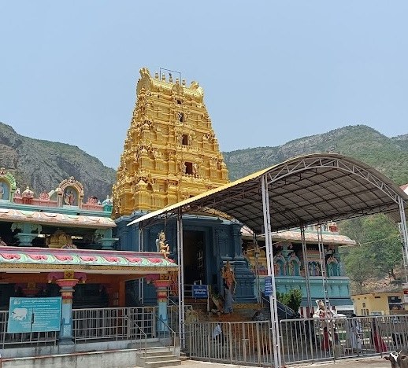

Penchalakona Sri Laxmi narasimha Swamy Temple

Temple Name: Penchalakona Sri Laxmi narasimha Swamy Temple
History: According to sacred texts, Lord Narasimha manifested here to meditate after slaying the demon Hiranyakasipu. The temple is believed to have self-originated at the spot where Lord Narasimha's finger fell while he was cleaning his nails after killing the demon.
Maps